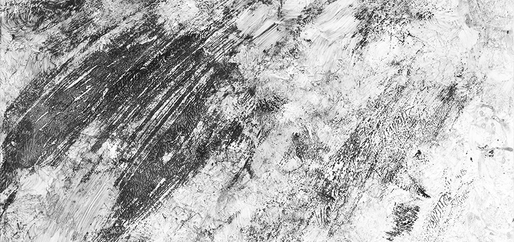

Una mirada retrospectiva en base a las metodologías disciplanares del Diseño y las Artes creativas, su evolución conceptual respecto a lo social,cultural y su valor académico. La importancia del emprendimiento creativo bajo la línea madre artesana del pensamiento introspectivo y el valor de difusión de este mismo ante la sociedad.
Objetivo de Investigación:
Propuesta de medio gráfico (revista) de difusión, comunicación e innovación en el mundo del Diseño por medio de conceptos claves como las Artes creativas y áreas de especialidad. La identidad del proyecto encuentra su base en la definición de cuatro criterios básicos de interés: criterio teórico, científico, práctico y tecnológico. Estos buscan ser respondidos en tres áreas investigativas de las que se encuentra mayor difusión e innovación: área académica, mercado y social. Convirtiéndose así en un referente “socio-cultural” del pensamiento creativo del Diseño local.
+Respecto a la línea general del medio gráfico:
Difundir el trabajo proyectual del egresado en Diseño mediante la publicación de acontecimientos emergentes en materia de proyecto e innovación en el mundo de la Artes creativas.
+Respecto a lo específico del medio gráfico:
-Exponer las nuevas temáticas de vanguardia en relación a una composición crítica y educativa del estudio de la historia.
-Reconocer nuevos talentos en sus áreas de especialidad, aportando nuevos eventos de análisis e investigación.
-Originar cultura de interés respecto al perfil laboral del Diseñador en la sociedad actual contemporánea.
Año de Realización:
2015
IDEOLOGÍA HISTÓRICA DEL MERCADO ESTÉTICO DEL PERFUME

Importancia de Investigación:
Un recorrido por la evolución social de la mujer desde los años 20' a los 90' respecto a su rol y postura frente a la sociedad. Se plantea la evolución del perfume (frasco y aroma) de acuerdo a los perfiles femeninos de cada época y la importancia respecto a como el Perfume refleja por medio del arte y su comercializaicón estética en el mercado, la igualdad de roles y perfiles tanto de la mujer como del hombre ante la sociedad.
Objetivo de Investigación:
El perfil femenino de los años 20' : mujer social, una mujer nueva ante los paradigmas de la sociedad, se suprime a la mujer hogareña y se promueve a la mujer trabajadora de estilo moderno y elegante. Es el principio de una mujer estética que rompe con los parámetros de feminidad.
En los años 20' el estilo de perfumería rescata abiertamente el perfil de la mujer de la época en sus frascos, la industria aromática se adapta al nuevo rol femenino: agilidad, comodidad y libertad de movimiento. El perfume de los años 20' se adaptaría a las actividades sociales a las que la mujer comenzaba a asistir en aquella época: la mujer accede al plano laboral, siendo sustentable económicamente.
Con el perfume y la generación de nuevas formulas como los aromas sintéticos, la perfumería empieza a reconocer un rango distinguible de utilización de cada aroma, es decir, el perfil de la mujer se traduce en un aroma y ese aroma representa su personalidad. Con el transcurso de los años se reconoce a una mujer independiente e inteligente, una mujer que cuida de sí misma.
En los 90’ el perfil de la mujer refuerza la visión andrógina de los años 20, bajo la tendencia de los años 80’ de reconocer una sociedad unisex, buscando diluir las diferencias de género.
En los 90’ el mundo de la perfumería, empiezan a diseñarse frascos neutros de aromas estándar que se distribuyen bajo la categoría “unisex”, ideando un perfil ideal de hombre y mujer en que el aroma puede ser utilizado. Se plantea una visión igualitaria del perfil femenino y masculino en la sociedad de la actualidad.